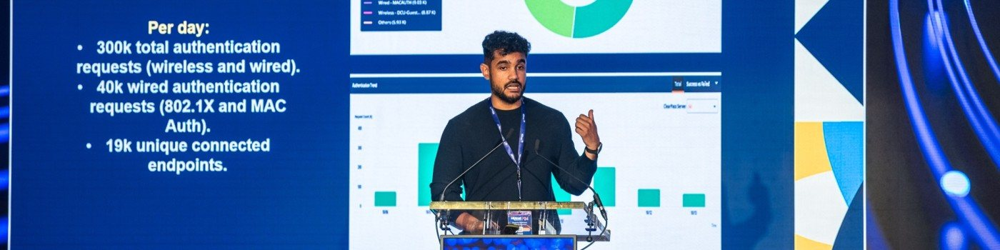

Experience
-
Senior Network Engineer
Design and operation of the campus network for students and staff: wired and wireless access, network access control, firewalls, DNS and load balancing. I write the automation around it, mostly in Python and OpenTofu, and troubleshoot major outages.
ClearPass · Juniper EX, SRX and Mist · HPE Aruba wireless · FortiGate · F5
-
Technical Account Manager and Cloud Support Engineer
As a Cloud Support Engineer I was a subject matter expert for AWS Direct Connect, working through customers' hybrid connectivity problems between their own networks and AWS. As a Technical Account Manager I was the technical point of contact for customer accounts.
Direct Connect · VPC · BGP
-
Earlier roles
Network roles at a systems integrator, a global service provider and a software company. Titles and dates are on LinkedIn.

Conference talks
-
How to Implement and Sustain Zero Trust Network Access (ZTNA)
HEAnet Conference, 2025. Part of the session Validated Trust, with TU Dublin.
How DCU deployed zero trust network access: adaptive access controls and network segmentation, and what it takes to keep them working on a live campus.
-
Enhancing Campus Security: Implementing Network Access Control at Dublin City University
HEAnet Conference, 2024
How DCU rolled out network access control in phases, so that only authorised users and devices get onto the wired and wireless network. At the time, it handled about 300,000 authentication requests a day from 19,000 endpoints.
Selected projects
-
Certificate renewal for appliances without ACME
Let's Encrypt certificates issued through DNS validation against the university's DNS platform, then installed on network appliances that have no ACME client of their own. On one platform this meant finding and using an undocumented REST endpoint. Renewals now run unattended and report by email.
Python · certbot · Docker · REST APIs
-
Juniper Mist as code
Brought an existing Mist organisation under OpenTofu by importing live configuration rather than rewriting it, so switch and site templates can be reviewed as code and reproduced for new buildings.
OpenTofu · Mist API · Git
-
One-step blocking for security incidents
Self-service jobs that block a malicious IP range through remotely triggered black hole routing, or a domain through a DNS response policy zone, with metadata kept for every entry so blocks can be audited and reversed.
Python · Rundeck · RTBH · DNS RPZ
-
User to switch port lookup
Given a user, returns the switch and port their device is connected to right now, from ClearPass session data. Turns a slow trace through logs into a single query.
Python · ClearPass API
Certifications
- F5
-
- Certified Administrator, BIG-IP
- Certified Technology Specialist, BIG-IP LTM (F5-CTS LTM)
- Certified Technology Specialist, BIG-IP DNS (F5-CTS DNS)
- AWS
-
- Certified Solutions Architect, Professional
- Certified Advanced Networking, Specialty
- Cisco
-
- CCNP Enterprise
- Juniper
-
- JNCIP-ENT, Enterprise Routing and Switching
Education
-
Postgraduate Diploma in Cyber Security
National College of Ireland, Dublin, 2024. Awarded with distinction.
-
BSc Telecommunications Engineering
Universidade Federal Fluminense, Rio de Janeiro, 2017
-
Exchange student, Electrical and Computer Engineering
New York Institute of Technology, New York, 2015